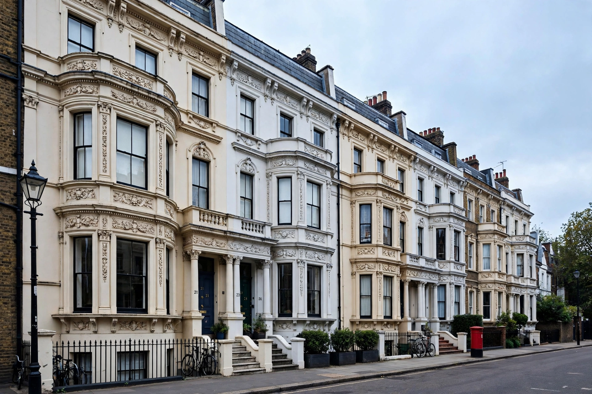

Victorian architecture
From Wikipedia, the free encyclopedia

Victorian architecture is a series of architectural revival styles in the mid-to-late nineteenth century, during the reign of Queen Victoria (1837–1901) and beyond the British world into its empire and the United States. It is less a single style than an era's eclecticism: Gothic Revival (the Palace of Westminster), Italianate villas, Queen Anne, Jacobethan, Scottish Baronial and the industrial vernacular of mills, stations and terraced housing — united by ornament, asymmetry, industrial materials (plate glass, cast iron, machine-made brick) and confidence.
Styles and building types
The battle of the styles (Gothic versus Classical) resolved into free borrowing; innovations were typological — the railway station, the museum, the department store, the suburb. Mass-produced ornament (stucco, terracotta, encaustic tile) democratised decoration, and the speculative terrace and the villa defined urban Britain and its settler offshoots (Melbourne, Toronto, San Francisco's 'painted ladies').
Reputation
The twentieth century despised the Victorian (demolition era, 'Victorian monstrosities'), until the Victorian Society (1958) and scholars like Roger Dixon and Stefan Muthesius restored its standing; today Victorian fabric is the protected backbone of British cities and a byword in property listings — the survival Ruskin and Betjeman prefigured.